Instalasi Web Server pada Ubuntu Server dan Windows
Tutorial ini dibuat untuk memenuhi tugas Praktikum Jaringan Komputer
1. Install Apache2 dengan cara sudo apt install apache2
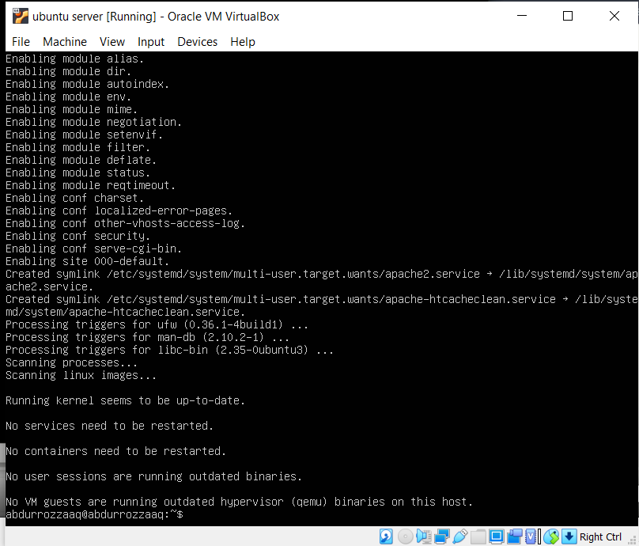2. Install PHP dengan cara sudo apt install php
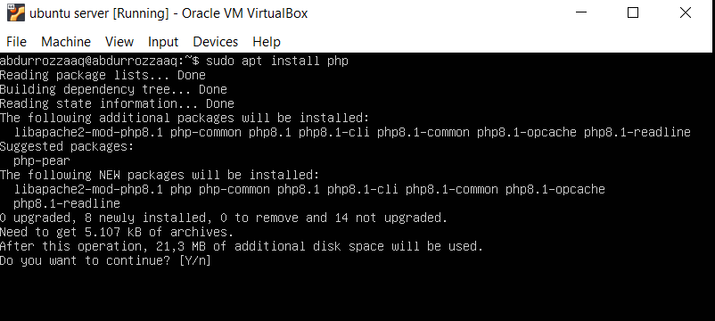3. Install MariaDB dengan cara sudo apt install mariadb-server
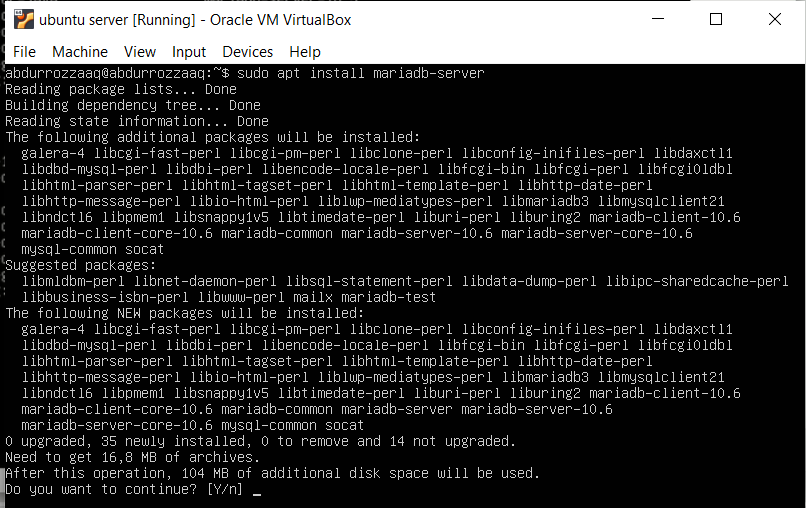4. Selanjutnya ikuti langkah-langkah pada gambar dibawah ini.
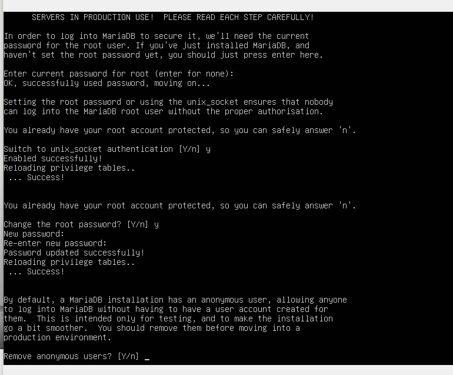 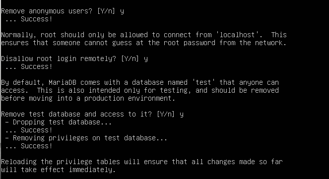 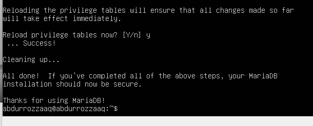5. Membuat database dengan cara sudo mysql -p root -u
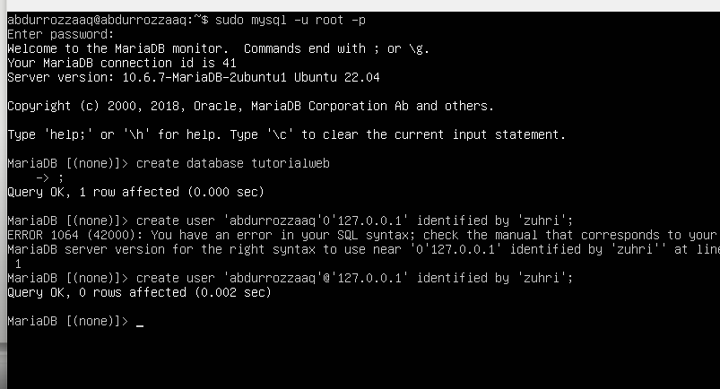6. Isi sesuai nama kalian dan localhost, disini saya menggunakan 127.0.0.1
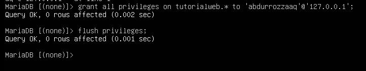7. Install FTP dengan cara sudo apt install proftp-basic
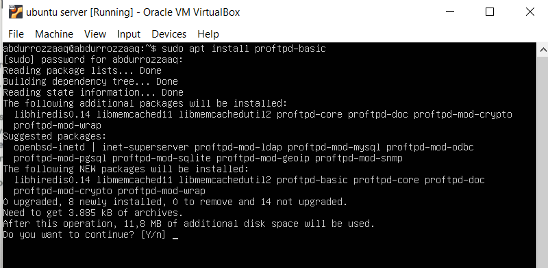8. Membuat user baru
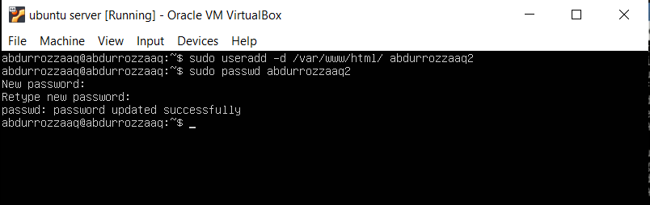9. Cek apakah user kita sudah ada
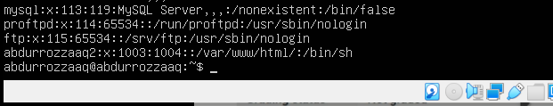10. Memberikan permission pada direktori /var/www/html kita agar bisa di read dan write pada windows kemudian install php-mysql, seperti gambar di bawah ini
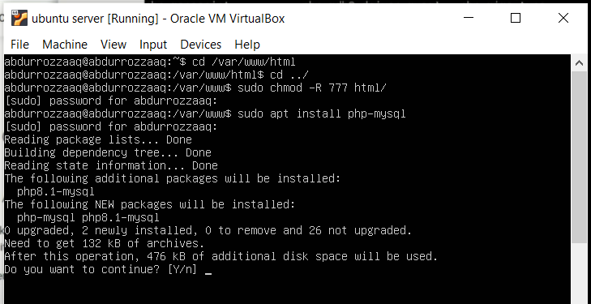11. Jika sudah maka restart dengan mengetik seperti dibawah
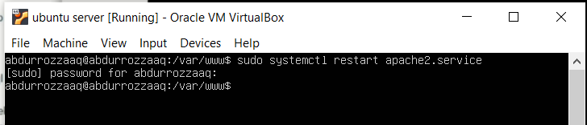12. Cek ip kita dengan ketik "ip a" kemudian sambungkan kepada filezila dengan ip tersebut dan username yang telah kita buat tadi
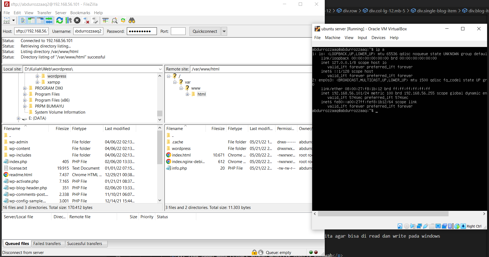13. Pindahkan file wordpress kalian ke ubuntu server
14. Buka pada web browser kalian dan ketik ip pada ubuntu sever seperti "192.168.56.101/wordpress"
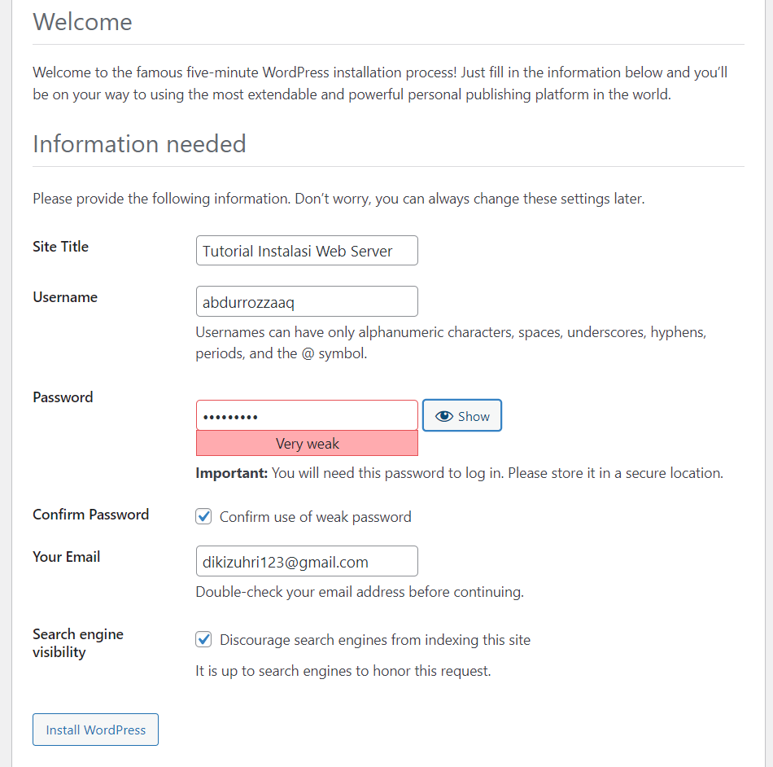15. Install wordpress kalian dan masukkan seperti dibawah
16. Wordpress siap digunakan
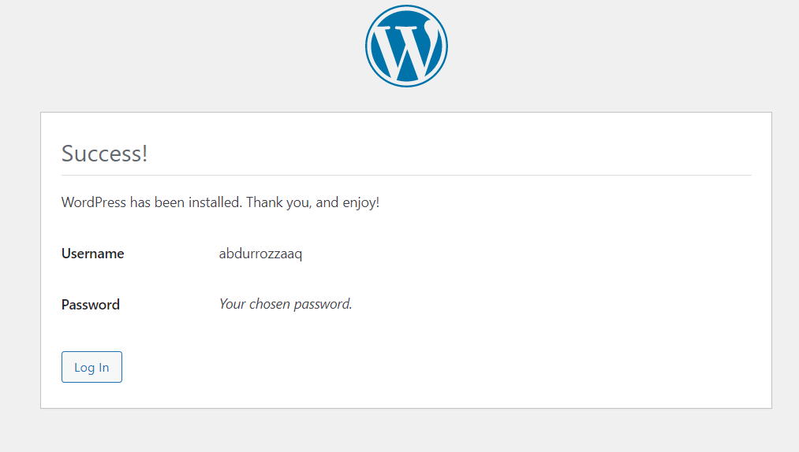